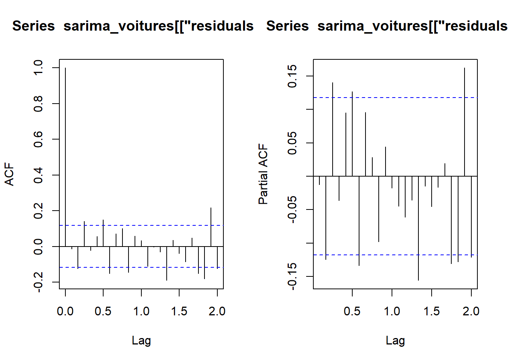

Code
# Données
library(dplyr) # manipulation des données
# Plots
## ggplot
library(ggplot2)
library(gridExtra)# Données
library(dplyr) # manipulation des données
# Plots
## ggplot
library(ggplot2)
library(gridExtra)METTRE LES REMARQUES
METTRE LES POINTS D’ATTENTION
Résultats
METTRE LES CONCLUSIONS
sessioninfo::session_info(pkgs = "attached")─ Session info ───────────────────────────────────────────────────────────────
setting value
version R version 4.2.1 (2022-06-23 ucrt)
os Windows 10 x64 (build 22631)
system x86_64, mingw32
ui RTerm
language (EN)
collate French_France.utf8
ctype French_France.utf8
tz Europe/Paris
date 2025-02-27
pandoc 3.2 @ C:/Program Files/RStudio/resources/app/bin/quarto/bin/tools/ (via rmarkdown)
─ Packages ───────────────────────────────────────────────────────────────────
package * version date (UTC) lib source
dplyr * 1.1.4 2023-11-17 [1] CRAN (R 4.2.3)
ggplot2 * 3.5.1 2024-04-23 [1] CRAN (R 4.2.3)
gridExtra * 2.3 2017-09-09 [1] CRAN (R 4.2.1)
[1] C:/Users/cleme/AppData/Local/R/win-library/4.2
[2] C:/Program Files/R/R-4.2.1/library
──────────────────────────────────────────────────────────────────────────────Sur la série de vente de voitures (avant la rupture), montrer que la modélisation SARIMA ne fournit pas une solution satisfaisante. www.math.sciences.univ-nantes.fr/~philippe/lecture/voiture.txt
url_TP3 = "http://www.math.sciences.univ-nantes.fr/~philippe/lecture/voiture.txt"
X = scan(url_TP3) # pour importer le dataframe en 1 vecteur de donnée (et non un dataframe de dim n*m)
Xt = ts(X, frequency =12)
Xt = window(Xt, start=start(Xt), end=24) # Avant rupture
On tente de trouver une modelisation sarima qui prend en compte la présence d’une tendance et une saisonnalité de période 12
sarima_voitures = auto.arima(Xt,
d=1,
D=1,
start.q = 1,
start.p = 1,
max.order = 4,
stationary = FALSE,
seasonal = TRUE,
ic = "bic",
trace = TRUE)
Fitting models using approximations to speed things up...
ARIMA(1,1,1)(1,1,1)[12] : 5555.015
ARIMA(0,1,0)(0,1,0)[12] : 5729.47
ARIMA(1,1,0)(1,1,0)[12] : 5658.897
ARIMA(0,1,1)(0,1,1)[12] : 5531.315
ARIMA(0,1,1)(0,1,0)[12] : 5629.095
ARIMA(0,1,1)(1,1,1)[12] : 5549.975
ARIMA(0,1,1)(0,1,2)[12] : 5536.018
ARIMA(0,1,1)(1,1,0)[12] : 5603.51
ARIMA(0,1,1)(1,1,2)[12] : 5545.522
ARIMA(0,1,0)(0,1,1)[12] : 5636.085
ARIMA(1,1,1)(0,1,1)[12] : 5537.866
ARIMA(0,1,2)(0,1,1)[12] : 5536.856
ARIMA(1,1,0)(0,1,1)[12] : 5592.743
ARIMA(1,1,2)(0,1,1)[12] : 5540.004
Now re-fitting the best model(s) without approximations...
ARIMA(0,1,1)(0,1,1)[12] : 5795.21
Best model: ARIMA(0,1,1)(0,1,1)[12] summary(sarima_voitures)Series: Xt
ARIMA(0,1,1)(0,1,1)[12]
Coefficients:
ma1 sma1
-0.7189 -0.7981
s.e. 0.0396 0.0496
sigma^2 = 180095614: log likelihood = -2889.24
AIC=5784.48 AICc=5784.57 BIC=5795.21
Training set error measures:
ME RMSE MAE MPE MAPE MASE
Training set -264.0867 13051.56 9612.369 -1.658486 8.476118 0.6515145
ACF1
Training set -0.01263232Si la modélisation choisie est valide, alors les résidus du modèle doivent former un bruit blanc. On peut alors regarder si l’ACF empirique et la PACF empirique des résidus sont similaires à celles d’un bruit blanc :

On peut utiliser la fonction coeftest de la librairie lmtest :
coeftest(sarima_voitures)
z test of coefficients:
Estimate Std. Error z value Pr(>|z|)
ma1 -0.718899 0.039585 -18.161 < 2.2e-16 ***
sma1 -0.798067 0.049578 -16.097 < 2.2e-16 ***
---
Signif. codes: 0 '***' 0.001 '**' 0.01 '*' 0.05 '.' 0.1 ' ' 1Toutes las variables sont considérées comme significatives. Pourtant, les ACF et PACF ne seblent pas représenter un Bruit Blanc.
Essayons quelques tests:
Test de Ljung-Box : Utilisez le test de Ljung-Box pour tester l’hypothèse que les autocorrélations jusqu’à un certain nombre de retards (lag) sont nulles.
Box.test(sarima_voitures[["residuals"]], lag = 20, type = "Ljung-Box")
Box-Ljung test
data: sarima_voitures[["residuals"]]
X-squared = 53.924, df = 20, p-value = 5.937e-05Si la p-value associée au test de Ljung-Box est significativement élevée, cela suggère que la série est un bruit blanc. Ici, ce n’est pas le cas.
Test d’adéquation de Kolmogorov-Smirnov : Vous pouvez également utiliser le test d’adéquation de Kolmogorov-Smirnov pour comparer la distribution empirique de vos données avec une distribution normale.
ks.test(sarima_voitures[["residuals"]], "pnorm")
Asymptotic one-sample Kolmogorov-Smirnov test
data: sarima_voitures[["residuals"]]
D = 0.51976, p-value < 2.2e-16
alternative hypothesis: two-sidedSi la p-value est élevée, cela suggère que la série suit une distribution normale, ce qui est caractéristique d’un bruit blanc. Ici, ce n’est pas le cas.
On peut donc conclure que la modélisation SARIMA ne fournit pas une solution satisfaisante.
On souhaite prévoir le nombre d’usagers de la SNCF pour les 12 mois de l’année 2001. Pour réaliser la prévision, on dispose des données mensuelles sur 11 années entre 1990 et 2000. Ces données sont disponibles dans le fichier suivant www.math.sciences.univ-nantes.fr/~philippe/lecture/donnees-sncf-1990-2000.txt
url = "http://www.math.sciences.univ-nantes.fr/~philippe/lecture/donnees-sncf-1990-2000.txt"
y = scan(url) # pour importer le dataframe en 1 vecteur de donnée (et ne pas avoir un truc de dim n*m)
yt = ts(y, frequency = 12) # car données sur évolution annuelle Ca ne ressemble pas à un MA ou un AR donc on peut tenter du SARIMA
dy = diff(yt)
tsplot(cbind(yt,dy), col = "purple", main = "Comparaison yt et (I-B)yt")avec l’acf, on peut vouloir s=12, D=1, d=1
RAPPEL : Le modèle SARIMA d’ordres \((p, d, q)(P, D, Q)_s\) s’écrit de la forme
\[\begin{align} \Phi(B^s)\phi(B)(I-B^s)^D(I-B)^dX_t = \Theta(B^s)\theta(B)w_t \end{align}\]
Les polynômes \(\phi\) et \(\theta\) représente la partie ARMA
Les polynômes \(\Phi\) et \(\Theta\) représente la partie ARMA saisonnière
\((I-B^s)^D\) et \((I-B)^d\) permettent de prendre en compte la non-stationnarité
En général \(D=1\) (ou \(2\))
modele_sarima = auto.arima(yt,
d=1,
D=1,
start.q = 1,
start.p = 1,
max.order = 4,
stationary = FALSE,
seasonal = TRUE,
ic = "bic",
trace = TRUE)
ARIMA(1,1,1)(1,1,1)[12] : 1498.52
ARIMA(0,1,0)(0,1,0)[12] : 1553.684
ARIMA(1,1,0)(1,1,0)[12] : 1518.427
ARIMA(0,1,1)(0,1,1)[12] : 1490.551
ARIMA(0,1,1)(0,1,0)[12] : 1508.769
ARIMA(0,1,1)(1,1,1)[12] : 1495.03
ARIMA(0,1,1)(0,1,2)[12] : 1495.01
ARIMA(0,1,1)(1,1,0)[12] : 1497.844
ARIMA(0,1,1)(1,1,2)[12] : Inf
ARIMA(0,1,0)(0,1,1)[12] : 1532.182
ARIMA(1,1,1)(0,1,1)[12] : 1494.006
ARIMA(0,1,2)(0,1,1)[12] : 1494.192
ARIMA(1,1,0)(0,1,1)[12] : 1511.698
ARIMA(1,1,2)(0,1,1)[12] : 1498.683
Best model: ARIMA(0,1,1)(0,1,1)[12] summary(modele_sarima)Series: yt
ARIMA(0,1,1)(0,1,1)[12]
Coefficients:
ma1 sma1
-0.7800 -0.5331
s.e. 0.0725 0.0931
sigma^2 = 13936: log likelihood = -738.11
AIC=1482.21 AICc=1482.42 BIC=1490.55
Training set error measures:
ME RMSE MAE MPE MAPE MASE ACF1
Training set 6.260106 111.1405 79.17467 0.1785064 3.036865 0.6068575 0.07031074De manière non automatique
mod1 = sarima(yt, p=1, d=1, q=1, P=0, D=1, Q=0, S=12)mod2 = sarima(yt, p=2, d=1, q=2, P=0, D=1, Q=0, S=12)mod3 = sarima(yt, p=3, d=1, q=3, P=0, D=1, Q=0, S=12)mod1$fit
Call:
arima(x = xdata, order = c(p, d, q), seasonal = list(order = c(P, D, Q), period = S),
include.mean = !no.constant, transform.pars = trans, fixed = fixed, optim.control = list(trace = trc,
REPORT = 1, reltol = tol))
Coefficients:
ar1 ma1
0.1185 -0.8458
s.e. 0.1793 0.1446
sigma^2 estimated as 17108: log likelihood = -749.35, aic = 1504.69
$degrees_of_freedom
[1] 117
$ttable
Estimate SE t.value p.value
ar1 0.1185 0.1793 0.6608 0.51
ma1 -0.8458 0.1446 -5.8478 0.00
$ICs
AIC AICc BIC
12.64448 12.64535 12.71454 mod2$fit
Call:
arima(x = xdata, order = c(p, d, q), seasonal = list(order = c(P, D, Q), period = S),
include.mean = !no.constant, transform.pars = trans, fixed = fixed, optim.control = list(trace = trc,
REPORT = 1, reltol = tol))
Coefficients:
ar1 ar2 ma1 ma2
-0.3648 0.2793 -0.3614 -0.5584
s.e. 0.2953 0.1081 0.2967 0.2614
sigma^2 estimated as 16560: log likelihood = -747.76, aic = 1505.51
$degrees_of_freedom
[1] 115
$ttable
Estimate SE t.value p.value
ar1 -0.3648 0.2953 -1.2353 0.2193
ar2 0.2793 0.1081 2.5830 0.0110
ma1 -0.3614 0.2967 -1.2182 0.2257
ma2 -0.5584 0.2614 -2.1363 0.0348
$ICs
AIC AICc BIC
12.65137 12.65432 12.76814 mod3$fit
Call:
arima(x = xdata, order = c(p, d, q), seasonal = list(order = c(P, D, Q), period = S),
include.mean = !no.constant, transform.pars = trans, fixed = fixed, optim.control = list(trace = trc,
REPORT = 1, reltol = tol))
Coefficients:
ar1 ar2 ar3 ma1 ma2 ma3
0.0264 -0.8078 -0.0497 -0.7504 0.8675 -0.7168
s.e. 0.1662 0.1181 0.1801 0.1438 0.1391 0.1469
sigma^2 estimated as 16187: log likelihood = -746.27, aic = 1506.55
$degrees_of_freedom
[1] 113
$ttable
Estimate SE t.value p.value
ar1 0.0264 0.1662 0.1587 0.8742
ar2 -0.8078 0.1181 -6.8423 0.0000
ar3 -0.0497 0.1801 -0.2758 0.7832
ma1 -0.7504 0.1438 -5.2182 0.0000
ma2 0.8675 0.1391 6.2371 0.0000
ma3 -0.7168 0.1469 -4.8812 0.0000
$ICs
AIC AICc BIC
12.66007 12.66637 12.82355 En regadant un peu la significativité ainsi que les critères AIC, AICc et BIC, on pourrait vouloir tenter de retenir les modèles mod2 et mod3.
Regardons pour nos modèles mod2 et mod3
par(mfrow=c(2, 1))
s1 = sarima.for(yt, n.ahead = 12, p=2, d=1, q=2, P=0, D=1, Q=0, S=12)
s2 = sarima.for(yt, n.ahead = 12, p=3, d=1, q=3, P=0, D=1, Q=0, S=12) Maintenant, si on prend le modèle choisi par auto.arima
s3 = sarima.for(yt, n.ahead = 12, p=1, d=0, q=1, P=0, D=0, Q=2, S=12) \(\sum_{h=1}^{12}(\hat{x}_{n:h} − x_{n+h})^2\).
Les sont disponibles dans le fichier https://www.math.sciences.univ-nantes.fr/~philippe/lecture/donnees-sncf-2001.txt
url_2001 = "https://www.math.sciences.univ-nantes.fr/~philippe/lecture/donnees-sncf-2001.txt"
y_2001 = scan(url_2001)
yt_2001 = ts(y_2001, frequency = 12, start = 12) eq1=c()
for (i in 1:12){
eq1[i] = (s1$pre[1] - yt_2001[i])^2
}
EQ1 = sum(eq1)
eq2=c()
for (i in 1:12){
eq2[i] = (s2$pre[1] - yt_2001[i])^2
}
EQ2 = sum(eq2)
EQ1[1] 2385213EQ2[1] 2364717# EQ2 est plus petite donc mod3 meilleur que mod2avec le modèle de auto.arima
eq3=c()
for (i in 1:12){
eq3[i] = (s3$pre[1] - yt_2001[i])^2
}
EQ3 = sum(eq3)
EQ1[1] 2385213EQ2[1] 2364717EQ3[1] 1706067Ici, l’erreur est beaucoup plus petite donc le modèle semble meilleur
Holt Winter
HW1 = HoltWinters(yt, start.periods = 2)
#plot(yt, xlim=c(0,14))
#lines(HW1$fitted[,1], lty=2, col="blue")
HW1.pred = predict(HW1, 12, prediction.interval = TRUE, level=0.95)
#Visually evaluate the prediction
#plot(yt, xlim=c(8,15), ylim = c(2500, 4000) )
plot(yt_2001, col = "black", lwd=2, ylim = c(2600, 5000))
#lines(HW1$fitted[,1], lty=2, col="blue")
lines(HW1.pred[,1], col="blue", lty = 2)
polygon(c(seq(12,13-1/12, by = 1/12), rev(seq(12,13-1/12, by = 1/12))), c(HW1.pred[,2], rev(HW1.pred[,3])), col=rgb(0, 0, 1,0.4), border = NA)
# RGB (Rouge, Vert, Bleu), où (0, 0, 1)
lines(s3$pred, col = "red", lty = 2)
legend("topleft",
legend = c("yt_2001", "prédiction estimée", "prédictions HW", "intervalle de\n prédictions HW"),
col = c("black", "red", "blue", rgb(0, 0, 1,0.4)),
lty = c(1, 2, 2, 1),
lwd = c(2, 1, 1, 12))